Bagaimana dengan keluaran dari sirkuit logika berikut?
Sirkuit di atas memiliki masukan pada awalnya, yaitu dan Masukan melalui pembalik sehingga menjadi Selanjutnya, dan melalui gerbang AND, menghasilkan Langkah berikutnya, dan melalui gerbang OR, menghasilkan Terakhir, hasil yang didapat melalui pembalik sehingga dinegasikan. Jadi, keluaran dari sirkuit logika di atas adalah
Soal Nomor 1
Tentukan keluaran dari sirkuit logika berikut.
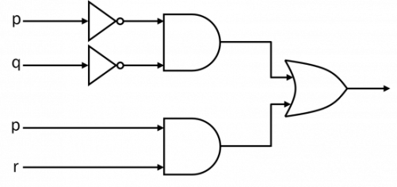
Pembahasan
Baca Juga: Analogi Logika Matematika pada Rangkaian Listrik
Soal Nomor 2
Tentukan keluaran dari sirkuit logika berikut.
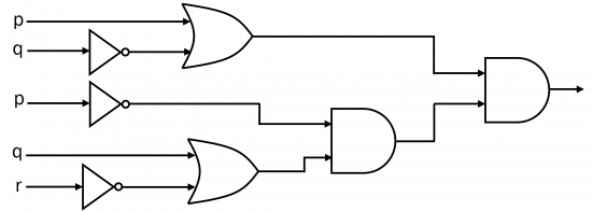
Pembahasan
Soal Nomor 3
Tentukan nilai keluaran ( 0 atau 1 ) dari sirkuit logika berikut jika:
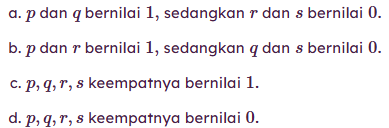
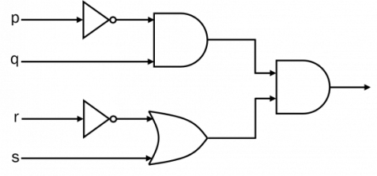
Pembahasan
Soal Nomor 4
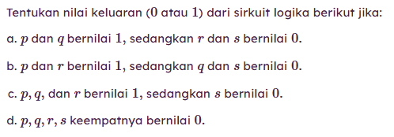
Kita memasuki era yang dipenuhi dengan pesatnya perkembangan teknologi informasi dan komunikasi. Piranti elektronik semakin canggih dan variatif. Sistem elektronika terus dieksplorasi oleh para ahli hingga saat ini. Namun, tahukah kamu bahwa salah satu pemahaman “kecil” yang membuat kita sampai semaju ini adalah gerbang logika?
Gerbang logika (logic gate) digunakan untuk membuat keputusan dalam suatu rangkaian berdasarkan kombinasi sinyal digital yang berasal dari masukan (input) digital. Masukan tersebut dibangkitkan oleh suatu alat yang disebut sebagai modulator. Untuk membuat rangkaian logika, kita memerlukan gerbang logika. Biasanya gerbang logika digunakan pada sirkuit terintegrasi (integrated circuits [IC]). Penggunaan IC dapat membatasi jumlah maksimal gerbang logika. Jumlah gerbang logika yang dibutuhkan sangat sedikit sebelum adanya IC.
Logika berbicara tentang bagaimana cara kita menarik suatu kesimpulan yang sahih. Jika argumen kita berupa pernyataan-pernyataan yang disebut proposisi, maka logika yang dimaksud di sini adalah logika proposisi (propositional logic). Logika proposisi bisa diaplikasikan dalam desain perangkat keras komputer. Hal ini telah ditelusuri pada tahun 1938 oleh Claude Elwood Shannon pada tesis magisternya di Massachusetts Institute of Technology (MIT). Karya ilmiah Shannon merupakan penanda awal mula lahirnya gerbang logika.
Gerbang logika bekerja mirip seperti apa yang telah kita pelajari terkait negasi (ingkaran), konjungsi, dan disjungsi. Gerbang logika merupakan bentuk visual darinya. Gerbang logika yang telah dirangkai sedemikian rupa akan membentuk sirkuit logika (logic circuit) atau sirkuit digital (digital circuit).
Gerbang logika dibagi menjadi dua macam, yaitu gerbang logika dasar dan gerbang logika turunan. Gerbang logika dasar meliputi: 1) penyangga (buffer), 2) pembalik (inverter) atau gerbang NOT (NOT gate), 3) gerbang AND (AND gate), dan 4) gerbang OR (OR gate), sedangkan gerbang logika turunan meliputi: 1) gerbang NAND (NAND gate), 2) gerbang NOR (NOR gate), 3) gerbang XOR (XOR gate), dan 4) gerbang XNOR (XNOR gate). Jadi, secara keseluruhan, kita memiliki gerbang logika yang digambarkan seperti bentuk berikut. Tanda panah menyatakan arus masukan.
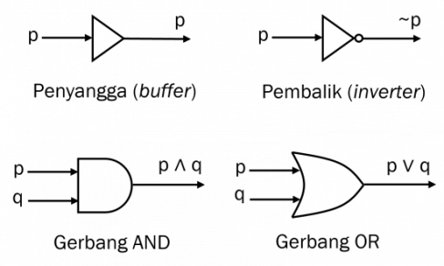
Temukan lebih banyak
elektronika
Elektronik & Listrik
Kursus Matematika Online
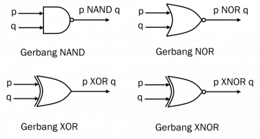
Di sini, kita akan mempelajari gerbang logika dari sudut pandang matematika saja, meskipun kenyataannya gerbang logika ini diterapkan pada bidang lain yang masih relevan, terutama teknik elektro.
Baca Juga: Soal dan Pembahasan – Logika Matematika
Perhatikan bahwa gambar di atas masih menggunakan notasi logika matematika yang pernah kita kenal sebelumnya. Untuk gerbang logika turunan, kita belum mendefinisikan notasi yang dipakai sehingga ditulis dengan kata, seperti Namun, ketika belajar tentang Aljabar Boolean, kita mengganti (sekaligus melengkapi) seluruh notasi tersebut.
Nilai (atau kondisi) setiap masukan mengacu pada prinsip bilangan biner, yaitu hanya ada kemungkinan.
Berikut ini akan dibahas satu persatu terkait delapan macam gerbang logika yang telah disebutkan sebelumnya.
Penyangga (Buffer)
Penyangga merupakan gerbang logika dasar yang tidak mengubah kondisi masukan. Jadi, jika masukan bernilai maka akan tetap bernilai meskipun melalui penyangga. Dengan kata lain, penyangga tidak memiliki fungsi dalam mengubah kondisi masukan, melainkan ia diciptakan untuk fungsi lain, yaitu memberikan penguatan arus dalam sirkuit digital untuk mendorong beban keluaran. Selain itu, penyangga juga difungsikan untuk mengisolasi gerbang guna mencegah impedansi dari satu rangkaian ke rangkaian yang lain.
Pembalik (Inverter) atau Gerbang NOT (NOT Gate)
Pembalik, atau biasa juga disebut gerbang NOT, merupakan gerbang logika dasar yang difungsikan untuk membalik nilai/kondisi masukan. Jika masukan bernilai maka akan menjadi bernilai ketika melalui pembalik, begitu juga sebaliknya. Perhatikan bahwa bentuk visual dari penyangga dan pembalik memang mirip karena ada bangun segitiga. Bedanya, pembalik memiliki bulatan putih di ujung. Notasi aljabar Boolean-nya menggunakan tanda garis atas (overline), yaitu
Tabel kebenaran dari pembalik dapat dilihat di bawah.
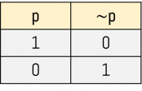
Baca Juga: Materi, Soal, dan Pembahasan – Operasi Logika dan Tabel Kebenaran
Gerbang AND (AND Gate)
Gerbang AND memerlukan minimal dua masukan untuk diproses. Jika kedua masukan bernilai maka keluarannya juga bernilai Sebaliknya, keluarannya akan bernilai Gerbang AND disimbolkan oleh setengah persegi lengkung TANPA bulatan putih di ujungnya. Notasi aljabar Boolean-nya menggunakan tanda titik, yaitu
Tabel kebenaran dari gerbang AND dapat dilihat di bawah.
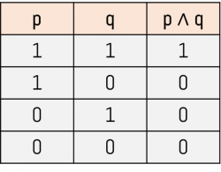
Gerbang OR (OR Gate)
Gerbang OR memerlukan minimal dua masukan untuk diproses. Jika salah satu dari kedua masukan (begitu juga dengan keduanya) bernilai maka keluarannya juga bernilai Sebaliknya, keluarannya akan bernilai Gerbang OR disimbolkan oleh lengkungan tertutup dengan ujung seperti tanda panah TANPA bulatan putih di ujungnya. Notasi aljabar Boolean-nya menggunakan tanda tambah, yaitu
Tabel kebenaran dari gerbang OR dapat dilihat di bawah.
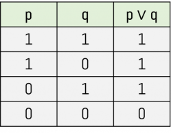
Gerbang NAND (NAND Gate)
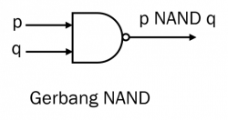
Gerbang NAND memerlukan minimal dua masukan untuk diproses. Gerbang NAND merupakan tandingan dari gerbang AND. Jika kedua masukan bernilai maka keluarannya juga bernilai Sebaliknya, keluarannya akan bernilai Gerbang NAND disimbolkan oleh setengah persegi lengkung DENGAN bulatan putih di ujungnya. Notasi aljabar Boolean-nya menggunakan tanda titik dan garis atas, yaitu
Tabel kebenaran dari gerbang NAND dapat dilihat di bawah.
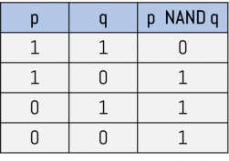
Gerbang NOR (NOR Gate)
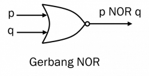
Gerbang NOR memerlukan minimal dua masukan untuk diproses. Gerbang NOR merupakan tandingan dari gerbang OR. Jika salah satu dari kedua masukan (begitu juga dengan keduanya) bernilai maka keluarannya bernilai Sebaliknya, keluarannya akan bernilai Gerbang NOR disimbolkan oleh lengkungan tertutup dengan ujung seperti tanda panah dan ada bulatan putih di ujungnya. Notasi aljabar Boolean-nya menggunakan tanda tambah dan garis atas, yaitu
Tabel kebenaran dari gerbang NOR dapat dilihat di bawah.
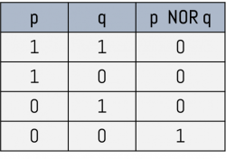
Gerbang XOR (XOR Gate)
Gerbang XOR memerlukan minimal dua masukan untuk diproses. Jika salah satu dari kedua masukan (begitu juga dengan keduanya) memiliki nilai/kondisi yang berbeda, maka keluarannya bernilai Sebaliknya, keluarannya akan bernilai Gerbang XOR disimbolkan oleh lengkungan tertutup dengan ujung seperti tanda panah dan ada lengkungan di arah masuknya. Notasi aljabar Boolean-nya menggunakan tanda , yaitu
Temukan lebih banyak
Statistik
Pembuktian Induksi Matematika
Tabel kebenaran dari gerbang XOR dapat dilihat di bawah.
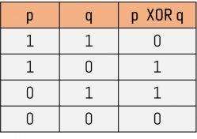
Gerbang XNOR (XNOR Gate)
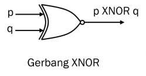
Gerbang XNOR memerlukan minimal dua masukan untuk diproses. Gerbang XNOR merupakan tandingan dari gerbang OR. Jika salah satu dari kedua masukan (begitu juga dengan keduanya) bernilai maka keluarannya bernilai Sebaliknya, keluarannya akan bernilai Gerbang XOR disimbolkan oleh lengkungan tertutup dengan ujung seperti tanda panah dan ada lengkungan di arah masuknya SERTA bulatan putih di ujung. Notasi aljabar Boolean-nya menggunakan tanda dan garis atas, yaitu
Tabel kebenaran dari gerbang XNOR dapat dilihat di bawah. Perhatikan bahwa nilai kebenaran dari sebenarnya ekuivalen dengan pernyataan biimplikasi,
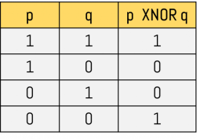
Contoh sirkuit logika yang menghasilkan keluaran (output) berupa adalah sebagai berikut.
Pada sirkuit logika di atas, tampak bahwa dan masing-masing melalui pembalik sehingga menghasilkan keluaran dan Keduanya kemudian melalui gerbang AND dan pada akhirnya menghasilkan keluaran
Converted to HTML with WordToHTML.net | Document Converter for Windows